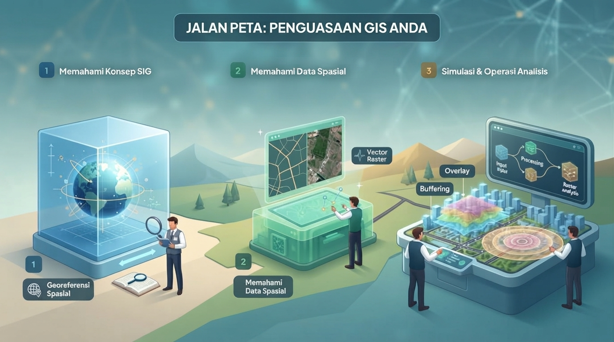
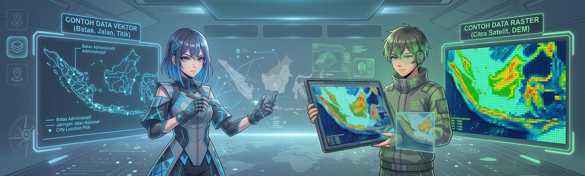
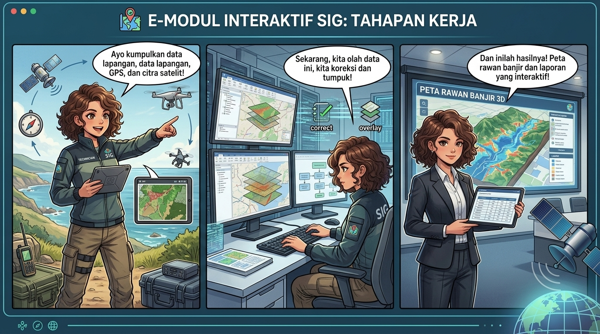
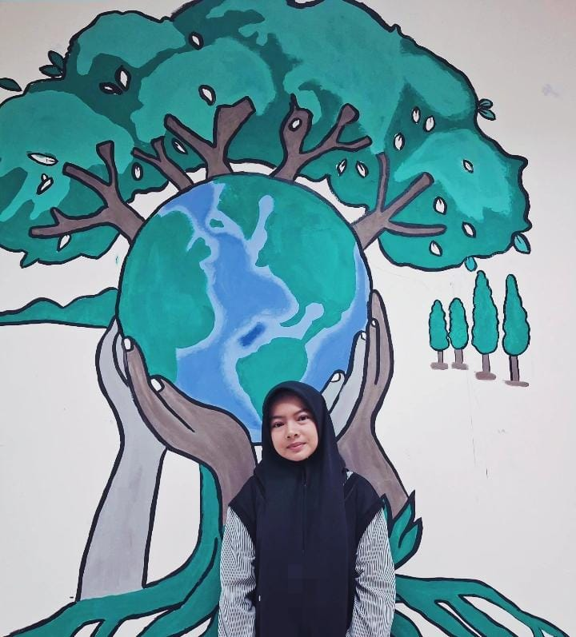

Sistem Informasi
Geografis
Jelajahi dunia modern, pahami prinsip dasar pemetaan komputer, simulasi tumpang susun layer data, dan selesaikan tantangan gim interaktif!
Registrasi Siswa
Masukkan identitas diri Anda untuk mencatat skor dan penerbitan Sertifikat Resmi di akhir gim.
Gambaran Umum & Tujuan Pembelajaran
Capaian Pembelajaran Geografi Fase F - Materi Sistem Informasi Geografis (SIG)
Apa itu SIG (Sistem Informasi Geografis)?
SIG adalah sistem komputerisasi yang digunakan untuk memasukkan (input), menyimpan, mengelola, menganalisis, dan menyajikan data bergeoreferensi (memiliki koordinat di permukaan bumi) untuk mengambil keputusan keruangan secara efisien.
Memahami Konsep SIG
Menjelaskan pengertian Sistem Informasi Geografis menurut para ahli serta karakteristik utamanya berbasis georeferensi spasial.
Memahami Data Spasial
Mempelajari karakteristik data spasial dan perbedaan antara data vektor dan raster dalam analisis SIG.
Simulasi & Operasi Analisis
Mempraktikkan tahapan kerja SIG (Input, Processing, Output) serta analisis keruangan seperti *Overlay* (tumpang susun) dan *Buffering*.

E-Modul Interaktif SIG
SIG terdiri dari 5 komponen utama yang saling terintegrasi agar dapat mengolah data geospasial secara optimal:
Hardware
Perangkat keras seperti komputer dan GPS.
Software
Program pemetaan seperti QGIS dan ArcGIS.
Data
Data spasial dan atribut yang menjadi sumber analisis.
Brainware
Pengguna yang mengoperasikan sistem dan menafsirkan hasil.
Metode
Prosedur kerja dan teknik analisis untuk menghasilkan informasi keruangan.

Data Vektor
ObjekData vektor menggambarkan objek geografis dalam bentuk titik, garis, dan poligon yang memiliki koordinat tertentu.
Contoh: jalan, sungai, batas desa, dan lokasi titik.
Data Raster
GridData raster tersusun atas piksel atau grid dengan nilai pada setiap sel yang merepresentasikan wilayah tertentu.
Contoh: citra satelit, foto udara, dan peta elevasi.

Mengumpulkan data awal dari peta, citra, GPS, survei lapangan, dan data pendukung lain agar siap diolah dalam sistem SIG.
Memproses data agar siap dianalisis, termasuk koreksi geometrik, klasifikasi, overlay, buffering, dan pengolahan atribut untuk menghasilkan informasi baru.
Menyajikan hasil analisis dalam bentuk peta, tabel, grafik, dan laporan yang mudah dipahami untuk pengambilan keputusan.

Arena Gim Edukasi SIG
Selesaikan ketiga modul tantangan untuk mengumpulkan skor!
Memuat pertanyaan pilihan ganda...
Klik item di sebelah kiri, kemudian klik deskripsi/fungsi yang cocok di sebelah kanan:
Klik item di bawah untuk memasukkannya ke dalam kategori Data SIG yang tepat (Vektor atau Raster):
GEO-CERTIFICATE OF COMPETENCY
Sistem Informasi Geografis • Fase F Geografi
Diberikan Kepada :
Nama Siswa
Kelas: XI Fase F | SMA Negeri 1 Jakarta
Tanggal Terbit: 12 September 2026
Ref Kurikulum: Capaian Pembelajaran Fase F Ruangguru
Tim Pengembang
Media Pembelajaran Geografi Interaktif
Media Pembelajaran
Tim Pengembang
Dosen Pengampu
Dr. Nofrion, M.Pd
Dosen pengampu yang membimbing dan mendukung proses pembelajaran Geografi dalam pengembangan media interaktif ini.

Dosen Pembimbing
Ikwanul Furqon, M.Pd
Dosen pembimbing yang membimbing dan mengarahkan jalannya pembelajaran serta pengembangan media interaktif SIG ini.

Identitas Pembuat